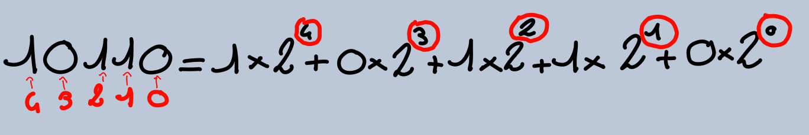
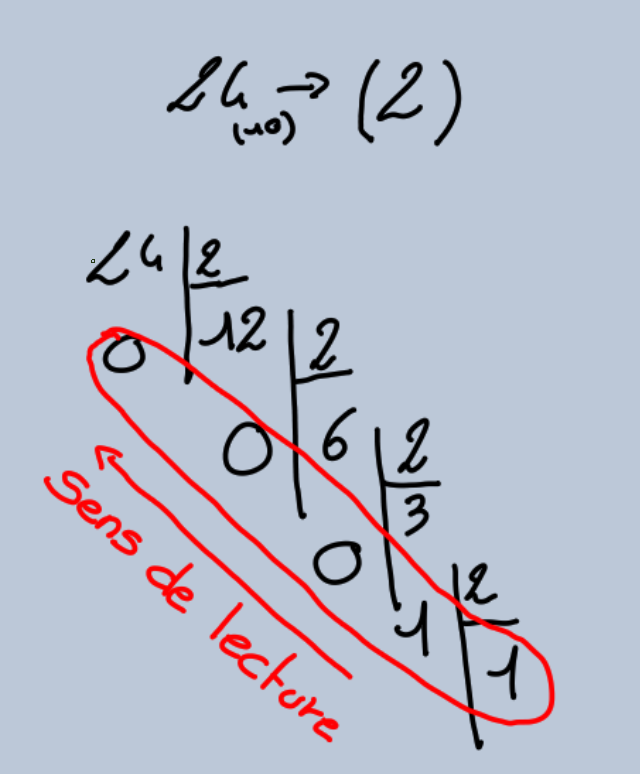
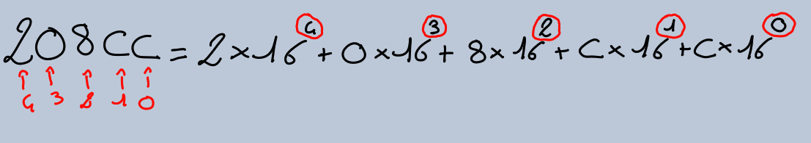

2) Système binaire
-

- Nombre symbole:16 (0-9 ; A-F)
- Base 16
- Décimal -> Binaire 
- Décimal -> Hexadécimal
Flandin_décimal.PNG
3) Système hexadécimal
-

4) Correspondance
| décimal | Binaire | Hexadécimal |
| 0 | 0 | 0 |
| 1 | 1 | 1 |
| 2 | 10 | 2 |
| 2 | 10 | 2 |
| 3 | 11 | 3 |
| 4 | 100 | 4 |
| 5 | 101 | 5 |
| 6 | 110 | 6 |
| 7 | 111 | 7 |
| 8 | 1000 | 8 |
| 9 | 1001 | 9 |
| 10 | 1010 | A |
| 11 | 1011 | B |
| 12 | 1100 | C |
| 13 | 1101 | D |
| 14 | 1110 | E |
| 15 | 1111 | F |
| 16 | 10000 | 10 |
5) Convertion
6) Convertion